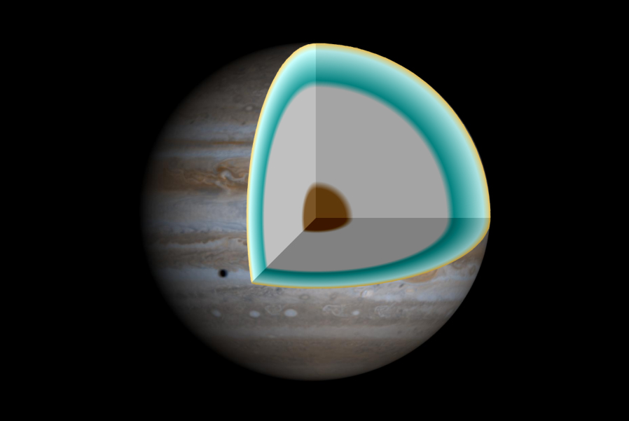

Масса в 2,5 раза больше суммы масс всех остальных планет. Продолжительность дня на Юпитере – примерно 10 земных часов. Год равняется 12 земным. У Юпитера самое большое количество спутников, их насчитывается 79. Также на Юпитере, вероятно, могут идти алмазные дожди.